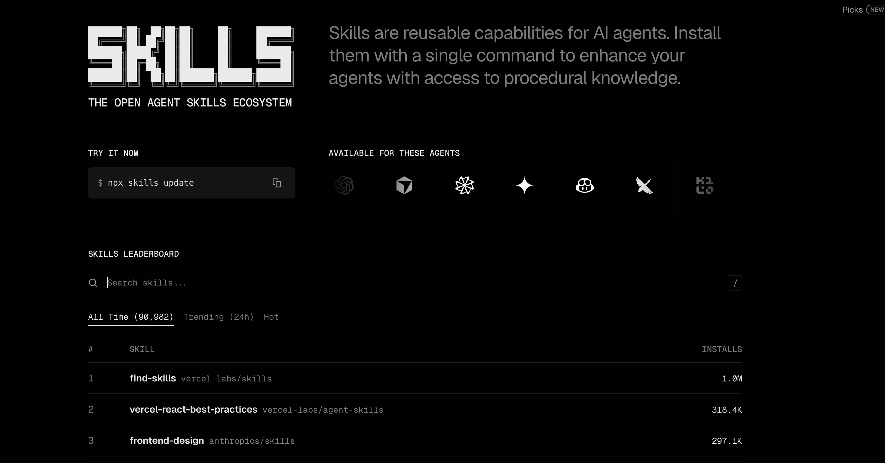
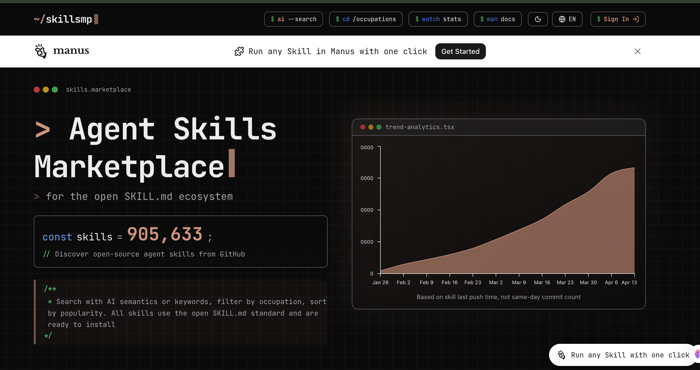
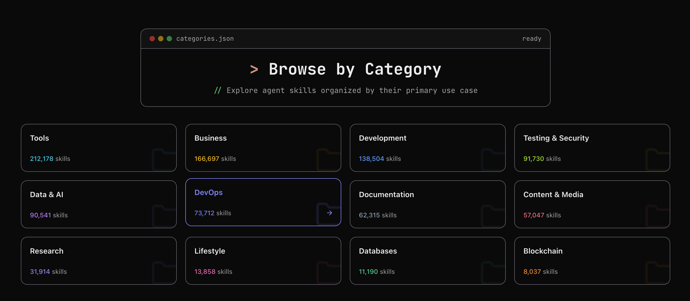

1 Intro to Agent Skills （skill \ skills.sh \ Skills MP \ find-skills 入门)
1 skill 入门
Agent Skills 是写进 Markdown 的「任务指南」，告诉助手该怎么做、用什么格式、遵循什么规范
不用改模型或写代码，改几份文档就能让 AI 更懂你的项目
为什么需要 Skills？
Skills 能解决三件事：
- 稳定：同一任务每次按同一套流程和格式，输出更可预期，不会因会话不同而画风突变。
- 可传承：把经验写成技能，新人、新会话都能复用，技能文件可随项目提交，全组共享规范。
- 省时间：复杂流程（PR 审查、数据库查询、报告生成等）写成技能后，助手按步骤执行，少费口舌，也减少漏步骤。
Skills 是什么、长什么样？
本质上，一个 Skill 是以 SKILL.md 为核心的文件夹，内含指令（Markdown）与可选附录（脚本、参考文档等；可选子目录常用 scripts/、references/、assets/）。
跨助手通用，在 Cursor、Claude Code 等里结构一致。以 Cursor 为例，目录结构如下：
.cursor/skills/
└── my-skill/
├── SKILL.md # 必需：技能名称、描述和主要步骤
├── scripts/ # 可选：可执行脚本
├── references/ # 可选：参考文档（如 REFERENCE.md）
└── assets/ # 可选：模板、配置等静态资源
每个技能有两个必填信息（写在 SKILL.md 文件开头的 YAML 里）：
name：技能的唯一标识，用英文、小写、连字符，如 code-review、commit-message；在 Cursor 中需与所在文件夹名一致。
description：用第三人称写「做什么 + 什么时候用」，并带上对话里会提到的关键词（如 commit、code review、PDF），助手靠它决定是否选用该技能。
技能怎么被触发？ 有两种方式：
隐式触发：你正常提需求（如「帮我写条 commit」「review 这段代码」），助手会扫一遍已加载技能的 description，自动判断当前任务是否匹配某条技能，匹配上就按该技能的说明执行。description 里写清「什么时候用」并带关键词，隐式触发才容易生效。
显式调用：你也可以主动指定用某条技能。
在 Cursor 的 Agent 对话里输入 / 再搜技能名（如 /commit-message），或直接说「用 commit-message 技能写提交信息」。适合要强制走某套流程、或有多条技能可能被误匹配时使用。
技能放哪里？ 不同产品用各自配置目录。
Cursor：个人用 ~/.cursor/skills/，项目用 .cursor/skills/ 或 .agents/skills/（勿用 ~/.cursor/skills-cursor/ 内置目录）。
Claude Code 用 ~/.claude/skills/ 与 .claude/skills/
能拿来做哪些事？
Skills 适合几乎所有「可重复」的工作：任务有相对固定的步骤、格式或规范即可写成技能，一次写好、多次调用。下面用 Cursor 举例，覆盖编程、文档、数据、流程等：
- 代码评审：写 code-review 技能，约定团队的评审标准（安全、可读性、测试等）和反馈格式（必须改/建议改/可选），说「帮我 review 这段代码」时 Cursor 就按技能里的清单输出。
- Commit 信息：写 commit-message 技能，约定格式（如 Conventional Commits：feat:、fix:、docs: 等）并给示例，助手按当前改动生成风格统一的提交信息，历史更整洁，也便于做自动化。
- 文档/报表：写好报告模板（摘要+发现+建议），助手按结构填空，输出格式一致，便于汇总汇报。
- API 文档与接口说明：把你们团队的接口描述规范（字段、示例、错误码等）写成技能，助手在写或补全 API 文档、README 时自动按同一套格式来。
- 单元测试与用例：约定测试框架、命名和结构（如 Given-When-Then），写成技能后，让助手按规范生成或补充单测、测试用例，风格统一。
- 数据库与发布流程：如查数据库 schema、按公司流程做发布或迁移，把「先查哪张表、再检查哪些配置」写成技能，在相关对话里助手会自动按步骤执行，减少遗漏。
- 数据清洗与分析：固定好数据源约定、清洗步骤和输出格式（如 CSV/报表结构），需要做类似分析时让助手按技能执行，结果格式一致。
- 需求与用户故事：把产品/团队的需求描述格式、用户故事模板写成技能，助手在协助写 PRD、拆 story 时按同一套结构输出，便于协作。
写好一个 Skill 的几条原则
描述要具体：
description 写清「做什么」和「什么时候用」，带上关键词（如 PDF、Excel、commit、code review）；写得太泛（如「帮助处理文档」）不利于助手在众多技能里准确选中。
主文件别太长：
核心步骤和模板放 SKILL.md，细节放 reference、examples，需要时再让助手读，方便日后维护。
多用示例：
格式类技能（commit、报告）给一两个输入输出示例，助手会模仿风格。例如在 Cursor 的 commit 技能里写：「改动：加了登录接口」→ feat(auth): add login endpoint，比只写「用 Conventional Commits」更管用。
用语统一：
技能里术语一致（如只叫「API 端点」不混用「URL」「路由」），减少歧义，方便多人维护。
怎么开始？
第一步：选一个你或团队重复在做、且希望风格统一的事（如写 commit、做 code review、生成周报），从「小而具体」的任务开始，更容易成功
第二步：在项目根或用户目录建 .cursor/skills/（或 ~/.cursor/skills/），新建以技能名命名的子目录（如 commit-message），写 SKILL.md，填好 name、description 和简要步骤。有现成示例可先抄再改。其他助手目录名不同，技能写法一致。
第三步：在 Cursor 对话里触发任务——可以自然说需求（如「根据当前改动写一条 commit」）让助手隐式匹配技能，也可以显式说「用 commit-message 技能写一条提交信息」；看是否按技能执行，再根据效果补充示例或把细节拆到 reference 里，迭代几次就顺手了。
2 Agent Skills 去哪找？ skills.sh 入门
skills.sh 是开放 Agent Skills 生态目录，可以理解为「技能的 npm / 应用商店」：上面列出一批符合规范的 Agent Skills，支持按安装量、趋势浏览与搜索，并用一条命令装到本地。

$ npx skills add anthropics/skills
███████╗██╗ ██╗██╗██╗ ██╗ ███████╗
██╔════╝██║ ██╔╝██║██║ ██║ ██╔════╝
███████╗█████╔╝ ██║██║ ██║ ███████╗
╚════██║██╔═██╗ ██║██║ ██║ ╚════██║
███████║██║ ██╗██║███████╗███████╗███████║
╚══════╝╚═╝ ╚═╝╚═╝╚══════╝╚══════╝╚══════╝
┌ skills
│
◇ Source: https://github.com/anthropics/skills.git
│
◇ Repository cloned
│
◇ Found 17 skills
│
◇ Select skills to install (space to toggle)
│ docx, pdf, pptx, xlsx, algorithmic-art, brand-guidelines, canvas-design, doc-coauthoring,
frontend-design, internal-comms, mcp-builder, skill-creator, slack-gif-creator, theme-factory,
web-artifacts-builder, webapp-testing
│
◇ 45 agents
....
│ One-time prompt - you won't be asked again if you dismiss.
│
◇ Install the find-skills skill? It helps your agent discover and suggest skills.
│ Yes
│
◇ Installing find-skills skill...
┌ skills
│
◇ Source: https://github.com/vercel-labs/skills.git
│
◇ Falling back to clone...
│
◇ Repository cloned
│
◇ Found 1 skill
│
● Selected 1 skill: find-skills
│
◇ Installation Summary ────────────────────────────────────╮
│ │
│ ~/.agents/skills/find-skills │
│ copy → Amp, Antigravity, Cline, Codex, Cursor +7 more │
│ │
├───────────────────────────────────────────────────────────╯
│
◇ Security Risk Assessments ─────────────────────────────────╮
│ │
│ Gen Socket Snyk │
│ find-skills Safe 0 alerts Med Risk │
│ │
│ Details: https://skills.sh/vercel-labs/skills │
│ │
├─────────────────────────────────────────────────────────────╯
│
◇ Installation complete
│
◇ Installed 1 skill ────────────────╮
│ │
│ ✓ find-skills (copied) │
│ → ~/.agents/skills/find-skills │
│ → ~/.agents/skills/find-skills │
│ → ~/.agents/skills/find-skills │
│ → ~/.agents/skills/find-skills │
│ → ~/.agents/skills/find-skills │
│ → ~/.agents/skills/find-skills │
│ → ~/.agents/skills/find-skills │
│ → ~/.agents/skills/find-skills │
│ → ~/.agents/skills/find-skills │
│ → ~/.agents/skills/find-skills │
│ → ~/.agents/skills/find-skills │
│ → ~/.agents/skills/find-skills │
│ │
├────────────────────────────────────╯
│
└ Done! Review skills before use; they run with full agent permissions.
- 以下是根据您提供的信息整理而成的 Markdown 表格：
| 分类（用途） | 说明 | 代表技能 / 仓库 |
|---|---|---|
| 前端 / React / UI | 前端开发、React/Next 与设计规范 | vercel-react-best-practices, frontend-design, web-design-guidelines, vercel-composition-patterns, next-best-practices, tailwind-design-system, shadcn-ui, vue-best-practices |
| 云 / Azure | Azure 与微软云相关 | microsoft/github-copilot-for-azure（azure-ai, azure-storage, azure-deploy 等 20+ 条） |
| 文档 / Office | 文档与办公格式处理 | pdf, pptx, docx, xlsx（anthropics/skills） |
| 技能发现与元技能 | 找技能、写技能、模板 | find-skills, skill-creator, template-skill |
| Agent 工作流 / 协作 | 规划、执行、Code Review、多 Agent | obra/superpowers（brainstorming, writing-plans, executing-plans, code-review, test-driven-development 等） |
| 营销 / SEO / 内容 | 营销、SEO、文案、转化 | coreyhaines31/marketingskills（seo-audit, copywriting, programmatic-seo, content-strategy 等） |
| 设计 / 视觉 / 品牌 | UI 设计、画布、主题、品牌 | canvas-design, algorithmic-art, theme-factory, brand-guidelines |
| 测试与质量 | 自动化测试、TDD、调试 | webapp-testing, test-driven-development, systematic-debugging |
| 移动 / Expo / React Native | 移动端与跨平台 | vercel-react-native-skills, building-native-ui, expo/skills（building-native-ui, native-data-fetching 等） |
| 视频 / 媒体 | Remotion 等视频与媒体 | remotion-best-practices, remotion-render, remotion-video-production |
| MCP / 工具 / 集成 | MCP 服务器、浏览器、工具 | mcp-builder, agent-browser, agent-tools, firecrawl |
| 数据库 / 后端 / Auth | 数据库、认证、API | supabase-postgres-best-practices, better-auth-best-practices, nodejs-backend-patterns |
| 文档协作 / 沟通 | 协作文档、内部沟通 | doc-coauthoring, internal-comms |
| 通用模板 / 多场景 | 多用途技能模板集合 | supercent-io/skills-template（code-review, api-design, deployment 等 40+ 条） |
三、验证步骤（做完即可验证）
- 打开 skills.sh，在排行榜或通过搜索选一个技能（例如 anthropics/skills，find-skills 或某个 commit/文档类技能）。
- 在终端执行：npx skills add
（把 换成该技能页给出的仓库，如 anthropics/skills 或 vercel-labs/skills）。 - 打开 Cursor（或你使用的 Agent），新建一个 Agent 对话，用自然语言触发该技能（例如装的是 find-skills 可以说「帮我找做 PPT 的技能」；装的是 commit 类可以说「根据当前改动写一条 commit」）。
- 若助手按该技能的说明执行或给出预期结果，说明安装与触发成功。
3 Agent Skills 去哪找？Skills MP 入门
如果你更习惯按领域浏览或用自然语言描述需求搜技能，可以试试 SkillsMP（https://skillsmp.com/）
本篇将讲述 SkillsMP 是什么、怎么发现技能、怎么装。SkillsMP 非官方，数据来自公开 GitHub，使用前建议自行审查来源与许可。
SkillsMP 通过智能搜索、分类筛选和质量参考帮你更快找到所需。
站内技能均采用开放的 SKILL.md 标准，兼容 Claude Code、OpenAI Codex CLI 等采用该格式的工具；无论做自动化开发、团队定制 AI 工具还是个人探索，都能按场景找到对应技能。
和 skills.sh 的差异：
- skills.sh：偏一键安装（npx skills add
）和排行榜（按安装量、趋势、热度）。 - SkillsMP：偏浏览与发现—— 按分类筛选，或用 AI 语义搜索 以自然语言找技能，而不只靠关键词

如何发现技能：分类浏览与 AI 语义搜索

https://skillsmp.com/categories/devops
| 大类 | 说明 / 子类举例 |
|---|---|
| Tools | 效率与集成、调试、系统管理、自动化工具、IDE 插件、CLI、域名与 DNS 等 |
| Development | 架构模式、CMS 与平台、前端 / 后端 / 全栈、游戏开发、脚本、移动端、包与分发等 |
| Business | 销售与市场、项目管理、财务与投资、健康与健身、地产与法律、支付、电商等 |
| Data & AI | LLM 与 AI、数据工程、机器学习、数据分析等 |
| Design | UI/UX、原型与设计系统等 |
安装方式
SkillsMP 上的条目多数来自 GitHub，安装方式一般是：
打开技能详情页，按页面说明操作；
常见做法：把对应仓库克隆或复制到本地的 skills 目录，例如：
Claude Code：~/.claude/skills/ 或 .claude/skills/
具体以每个技能页的说明为准。部分 SkillsMP 技能页会提供与 skills.sh 相同的 npx skills add <owner/repo> 安装方式，也有不少只给「克隆或复制到目录」的说明，步骤因页而异；SkillsMP 聚合自大量公开仓库，能看到的技能数量与范围通常更广。若使用 Manus 等集成，SkillsMP 也支持一键运行。
验证步骤（做完即可验证）
- 打开 skillsmp.com，在分类或搜索里选一个你需要的技能。
- 点进技能页，按页面说明把该技能装到本地（如克隆到 ~/.cursor/skills/ 或项目对应目录）。
- 打开 Cursor（或你使用的 Agent），新建 Agent 对话，用自然语言触发该技能（例如技能是「写 commit」，就说「根据当前改动写一条 commit」）。
- 若助手按该技能的说明执行或给出预期结果，说明安装与触发成功。
npx skills add mukul975/Anthropic-Cybersecurity-Skills
◇ Select skills to install (space to toggle)
│ implementing-network-policies-for-kubernetes
│
◇ 45 agents
◆ Which agents do you want to install to?
◆ Which agents do you want to install to?
◆ Which agents do you want to install to?
◇ Which agents do you want to install to?
│ Amp, Antigravity, Cline, Codex, Cursor, Deep Agents, Firebender, Gemini CLI, GitHub Copilot, Kimi Code CLI, OpenCode, Warp
│
◇ Installation scope
│ Project
│
◇ Installation Summary ───────────────────────────────────────────────────────────────╮
│ │
│ ~/learnspace/ai/skills/.agents/skills/implementing-network-policies-for-kubernetes │
│ copy → Amp, Antigravity, Cline, Codex, Cursor +7 more │
│ │
├──────────────────────────────────────────────────────────────────────────────────────╯
│
◇ Security Risk Assessments ──────────────────────────────────────────────────────────╮
│ │
│ Gen Socket Snyk │
│ implementing-network-policies-for-k… Safe 0 alerts Low Risk │
│ │
│ Details: https://skills.sh/mukul975/Anthropic-Cybersecurity-Skills │
│ │
├──────────────────────────────────────────────────────────────────────────────────────╯
│
◇ Proceed with installation?
│ Yes
│
◇ Installation complete
│
◇ Installed 1 skill ──────────────────────────────────────────────────────────────────────╮
│ │
│ ✓ implementing-network-policies-for-kubernetes (copied) │
│ → ~/learnspace/ai/skills/.agents/skills/implementing-network-policies-for-kubernetes │
│ → ~/learnspace/ai/skills/.agents/skills/implementing-network-policies-for-kubernetes │
│ → ~/learnspace/ai/skills/.agents/skills/implementing-network-policies-for-kubernetes │
│ → ~/learnspace/ai/skills/.agents/skills/implementing-network-policies-for-kubernetes │
│ → ~/learnspace/ai/skills/.agents/skills/implementing-network-policies-for-kubernetes │
│ → ~/learnspace/ai/skills/.agents/skills/implementing-network-policies-for-kubernetes │
│ → ~/learnspace/ai/skills/.agents/skills/implementing-network-policies-for-kubernetes │
│ → ~/learnspace/ai/skills/.agents/skills/implementing-network-policies-for-kubernetes │
│ → ~/learnspace/ai/skills/.agents/skills/implementing-network-policies-for-kubernetes │
│ → ~/learnspace/ai/skills/.agents/skills/implementing-network-policies-for-kubernetes │
│ → ~/learnspace/ai/skills/.agents/skills/implementing-network-policies-for-kubernetes │
│ → ~/learnspace/ai/skills/.agents/skills/implementing-network-policies-for-kubernetes │
│ │
├──────────────────────────────────────────────────────────────────────────────────────────╯
│
└ Done! Review skills before use; they run with full agent permissions
4 Agent Skills 去哪找：find-skills 入门
前面两篇讲了「打开网页（skills.sh 或 SkillsMP）→ 选技能 → 复制/执行安装」的方式。
有没有办法不离开对话，直接说「帮我找做 PPT 的技能」「有没有 React 最佳实践」就让助手帮你找并装？
可以，用 find-skills 就行。
一、find-skills 是什么？
find-skills 是一条「用来找其他技能」的技能，来自 vercel-labs/skills 仓库，在 skills.sh 排行榜上安装量长期位居前列。
它的作用是：在对话中帮用户搜索、发现、筛选并安装技能。你只需用自然语言描述需求，例如：
- 「帮我找做 PPT 的技能」
- 「有没有 React 最佳实践相关的技能？」
- 「适合 Cursor 的 code review 技能」
助手会按 find-skills 的指引，从技能目录（如 skills.sh 前列）里检索、推荐，并可按你的选择执行安装命令。
二、安装与触发
如何装 find-skills？
- 在终端执行：
npx skills add vercel-labs/skills（`会安装该仓库中的技能，当前主要为 find-skills） - 或打开 skills.sh，搜索「find-skills」，按页面说明安装。若只装这一条技能，可使用：
npx skills add vercel-labs/skills --skill find-skills（具体以 skills.sh 页面为准）
npx skills add vercel-labs/skills --skill find-skill
vercel-labs/skills 仓库里可能包含多条技能，find-skills 是其中专门用于「发现并安装技能」的那一条，装好整个仓库后，助手在对话里就能根据你的问题调用它。
◇ Installation scope
│ Project
│
◇ Installation method
│ Symlink (Recommended)
│
◇ Installation Summary ────────────────────────────────────────╮
│ │
│ ~/learnspace/ai/skills/.agents/skills/find-skills │
│ universal: Amp, Antigravity, Cline, Codex, Cursor +7 more │
│ symlink → Claude Code │
│ │
├───────────────────────────────────────────────────────────────╯
│
◇ Security Risk Assessments ─────────────────────────────────╮
│ │
│ Gen Socket Snyk │
│ find-skills Safe 0 alerts Med Risk │
│ │
│ Details: https://skills.sh/vercel-labs/skills │
│ │
├─────────────────────────────────────────────────────────────╯
│
◇ Proceed with installation?
│ Yes
│
◇ Installation complete
│
◇ Installed 1 skill ───────────────────────────────────────────╮
│ │
│ ✓ ~/learnspace/ai/skills/.agents/skills/find-skills │
│ universal: Amp, Antigravity, Cline, Codex, Cursor +7 more │
│ symlinked: Claude Code │
│ │
├───────────────────────────────────────────────────────────────╯
│
└ Done! Review skills before use; they run with full agent permissions.
选择 Project 时，技能会装到当前项目下的 .agents/skills/find-skills （或你环境对应的路径）；
选择 Symlink 可让同一份技能被多个 Agent（如 Cursor、Claude Code、Windsurf）共用。安装完成后即可在对话中用「帮我找做 PPT 的技能」等话术触发 find-skills。
和「先打开 skills.sh / SkillsMP 再手动装」的对比
.agents/skills
% tree find-skills
find-skills
└── SKILL.md
1 directory, 1 file
5 Anthropic 官方 Skills 仓库与 PPT Skill 拆解
anthropics/skills 是 Anthropic 官方维护的 Agent Skills 示例与规范仓库，既有可直接用的技能，也有写技能时可对照的 spec（规范）和 template（模板）。
标准本身见 agentskills.io（https://agentskills.io/）。本篇先介绍仓库结构、怎么用，再以 pptx（PPT/演示文稿）技能为例拆解设计，并提炼可复用的原则。
1、anthropics/skills 仓库介绍
是什么？
- 仓库：github.com/anthropics/skills
- 规范：Agent Skills 的格式与约定见 agentskills.io。
- 内容：既有创意/设计类示例，也有技术类（如 Web 测试、MCP 生成）、企业流程（沟通、品牌）以及文档类技能（docx、pdf、pptx、xlsx）。文档类为 source-available（非开源），用于支撑 Claude 的文档能力，但可作为「复杂技能」的参考。
目录结构
- skills/ ： 各条技能的文件夹，每条一个子目录，内含 SKILL.md 及可选子文档、脚本
- spec/： Agent Skills 规范，写技能时对照 （指向 https://agentskills.io/specification）
- template/ 技能模板，新建技能可从这里复制再改
安装方式（详见）：在终端执行 npx skills add anthropics/skills，按提示选择要安装的技能、目标 Agent（如 Cursor）、项目或全局、是否用符号链接等；CLI 会自动把技能放到当前环境支持的目录。
Claude Code
~/.claude/skills/
或项目 .claude/skills/；
也可用插件：/plugin marketplace add anthropics/skills 后安装 document-skills / example-skills，或 /plugin install document-skills@anthropic-agent-skills
文件组成
- SKILL.md 主入口：YAML、Quick Reference、分场景路由、Design Ideas、QA 要求、依赖
- editing.md 基于已有模板编辑演示文稿的详细流程
- pptxgenjs.md 从零用 pptxgenjs 创建演示的步骤与 API
- scripts/ 如 thumbnail、office（解包/打包、转 PDF 等）
- LICENSE.txt 许可说明（该技能为 source-available
YAML 与 description
- name：pptx
- description：明确写清「任何涉及 .pptx 的场景」——作为输入、输出或两者；并列举触发词：deck、slides、presentation、.pptx 文件名等。这样用户一说「做一份 PPT」「改一下 deck」就容易被隐式匹配。